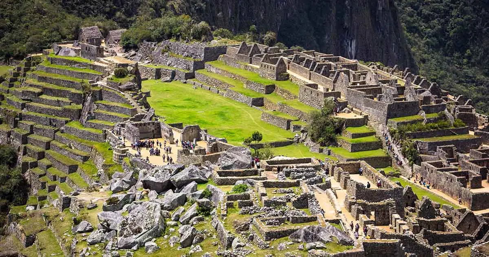

על המקוםמאצ'ו פיצ'ו היא עיר קדם-קולומביאנית של תרבות האינקה. העיר, שהייתה מיושבת בתקופה שבה הייתה תרבות האינקה בשיא פריחתה, נמצאת על רכס הרים מעל עמק אורובמבה בפרו, במרחק של כ-70 ק"מ מהעיר קוסקו. על אף שהייתה מוכרת למקומיים במשך מאות שנים, לא זכתה העיר להתעניינות בינלאומית במשך זמן רב. העניין בה התעורר מחדש לאחר פעילותו של הארכאולוג היירם בינגהאם השלישי ב-1911, שביצע את הבדיקה המדעית הראשונה באתר וכתב רב-מכר על אודותיו. מאצ'ו פיצ'ו היא ככל הנראה הסמל המוכר ביותר של אימפריית האינקה. לעיתים קרובות מתייחסים אליה בתואר "העיר האבודה של האינקה" (אולם מושג זה שנוי במחלוקת). המבנים במאצ'ו פיצ'ו בנויים מאבנים גדולות ומסותתות, והן הותאמו בדייקנות זו לזו ולכן אין שכבת טיט ביניהן. המבנים כוללים אתרי פולחן לשמש ולגשם, אחוזת קבר, מקדש ואתרים נוספים. כמו כן, נמצאה מחצבה שבה חצבו אבנים לבניית בתי העיר המחוברת באמצעות שביל לעיר קוסקו. מפסגתו של Huaina Picchu ניתן לצפות במאצ'ו פיצ'ו כולה. צורתו הכללית של האתר, כפי שהיא נראית מפסגת ההר, מזכירה את צורתו של קונדור האנדים, המהווה סמל חשוב בתרבות האינקה בפרט ובתרבות הדרום אמריקאית בכלל. |

 |